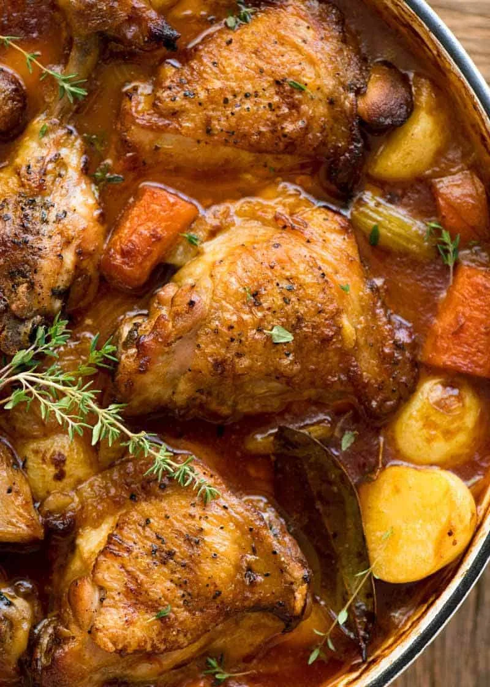

Chicken Stew
Back to Home

Chicken stew: a warm, comforting dish featuring tender chicken pieces simmered with a medley of vegetables like carrots,
potatoes, and onions, all bathed in a rich, savory broth. Seasoned with herbs and spices, it's a versatile, one-pot meal
perfect for cozy evenings and family gatherings, offering a hearty and satisfying experience.
- Chicken: (bone-in or boneless, thighs, drumsticks, or breasts)
- Onions
- carrots
- potatoes
- Celery
- Chicken broth
- Garlic
- Olive oil or butter
- Herbs
- Salt and pepper
- Brown Chicken: Season chicken, then brown it in a pot with oil. Take it out.
- Cook Veggies: Cook chopped onions, carrots, and celery in the same pot.
- Add Broth & Chicken: Pour in chicken broth, add the chicken back in, and add potatoes.
- Simmer: Cook until chicken and veggies are tender.
- Thicken (Optional): Mix flour with water, stir into the stew to thicken.
- Chicken broth
- Add Peas (Optional): Add peas at the end
- Serve with bread and enjoy